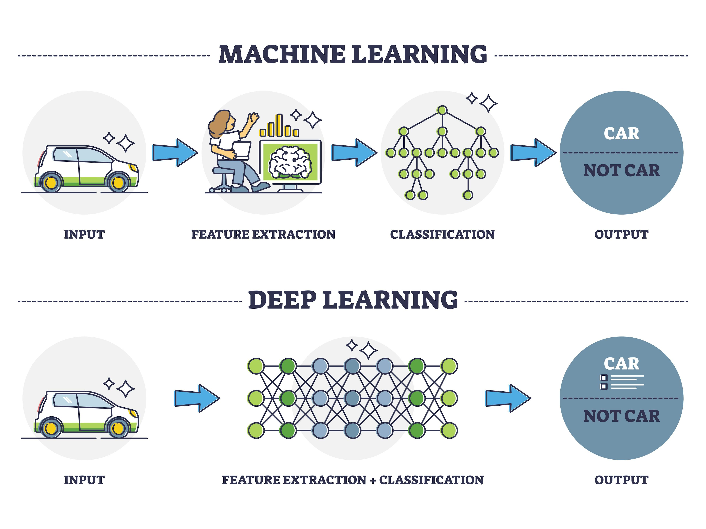
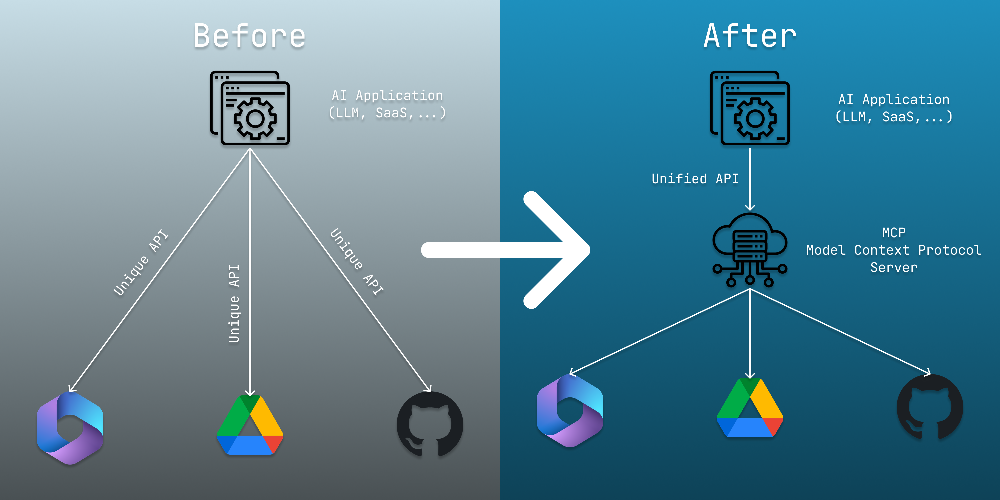
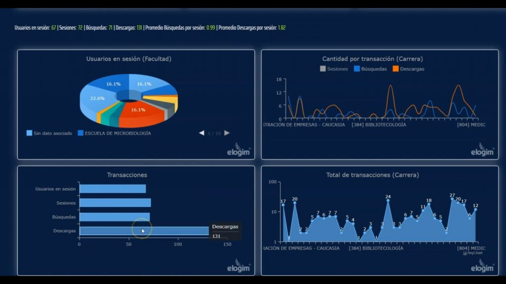
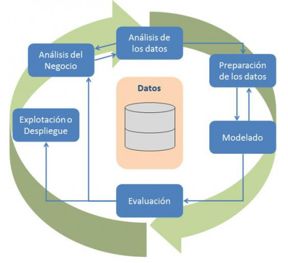
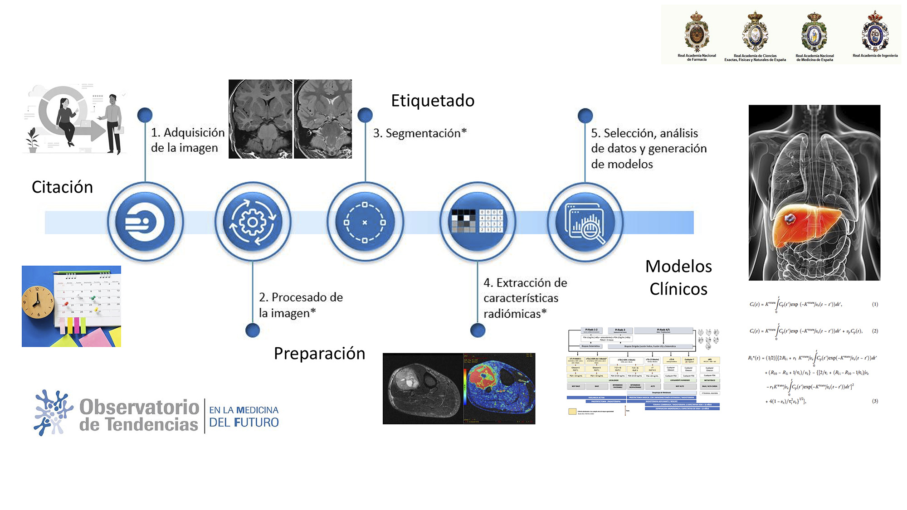

Intel·ligència artificial (IA)
1. Antecedents
La història de la intel·ligència artificial es remunta a l’Antiguitat, amb mites que descriuen màquines dotades d’intel·ligència. No obstant això, el desenvolupament formal de la IA com a camp d’estudi comença a mitjans del segle XX, quan Alan Turing, matemàtic i pioner de la informàtica, va establir les bases teòriques en plantejar la pregunta: «Pot una màquina pensar?», en el seu famós article de 1950.
Alan Turing
Alan Turing va ser un matemàtic, lògic i criptògraf britànic considerat un dels pares de la informàtica moderna.
Durant la Segona Guerra Mundial va jugar un paper clau en desxifrar els codis de la màquina Enigma utilitzada per l’Alemanya nazi.
Va formular el concepte de màquina de Turing, fonamental per entendre el funcionament dels ordinadors.
Tot i els seus èxits, va ser perseguit per la seua homosexualitat i va morir tràgicament el 1954.
El terme intel·ligència artificial fou encunyat en la Conferència de Dartmouth en 1956, on es reuniren visionaris com John McCarthy, Marvin Minsky, Allen Newell i Herbert Simon. Estos pioners aspiraven a crear programes informàtics que pogueren imitar la intel·ligència humana.
Durant les dècades dels cinquanta i seixanta, l’optimisme regnava. Es desenvolupaven programes de IA que resolien problemes matemàtics o de lògica. No obstant això, la falta d’avanços significatius portà a un període de desil·lusió conegut com «l’hivern de la IA» en els anys setanta i vuitanta.
El ressorgiment de la IA començà en la dècada dels huitanta amb avanços en algorismes d’aprenentatge automàtic i el creixent ús de sistemes basats en el coneixement. La computació més potent i la disponibilitat de grans conjunts de dades impulsaren el progrés en àrees com el reconeixement de veu i la visió per computador. L’última dècada ha vist èxits extraordinaris gràcies a l’aprenentatge profund, una ramificació que utilitza xarxes neuronals profundes amb múltiples capes. El creixement massiu de dades (big data) ha sigut fonamental per entrenar models cada vegada més precisos i complexos.
La IA en l’actualitat presenta avanços significatius en diversos àmbits, millorant l'eficiència i la qualitat de vida. S’han desenvolupat també plans de debat ètics i socials, com preocupacions sobre privacitat, seguretat i canvis en el mercat laboral.
Mirant cap al futur, s’espera una major autonomia en sistemes i una integració més estreta entre humans i màquines cada vegada més. És crucial abordar èticament els desafiaments i establir regulacions per a un ús responsable. La inversió en educació contínua serà essencial per a preparar la societat per als canvis en el panorama laboral. La gestió acurada determinarà com la IA impactarà positivament en la societat i s’integrarà en harmonia amb la humanitat.
2. Definició
La intel·ligència artificial es refereix a la capacitat de les màquines i sistemes informàtics per a realitzar tasques que requereixen de la intel·ligència humana.
En realitat, la IA és un camp interdisciplinari que combina la informàtica, les matemàtiques, la ciència cognitiva i la ciència computacional amb l’objectiu de desenvolupar sistemes i màquines capaces de realitzar tasques que abasten des de processos simples fins a activitats complexes que impliquen aprenentatge, raonament, percepció, interacció i presa de decisions.
Les tasques en què la IA es desenvolupa, emulant i en alguns casos superant, la intel·ligència humana abasten àrees com el reconeixement de patrons, la comprensió del llenguatge natural, la visió per computador i la capacitat de prendre decisions basades en dades. Això, com veurem en esta unitat, contribuirà a l’automatització i millora de processos en una àmplia varietat de sectors.
3. Tipus de IA
Actualment hi ha una àmplia varietat de models de IA. Tots estos models estan basats en els següents tipus de IA:
Intel·ligència artificial estreta
La IA estreta, també coneguda com a IA dèbil o IA especialitzada, es caracteritza per la seua capacitat per a portar a terme tasques específiques o limitades. Estos sistemes exhibeixen un alt nivell d’especialització en un domini particular, demostrant habilitats expertes en eixe àmbit. No obstant això, la seua limitació recau en la falta d’adaptabilitat a contextos diferents i la incapacitat d’aprendre noves habilitats més enllà de la seua tasca específica.
Exemples pràctics de la IA estreta inclouen sistemes de reconeixement de veu que operen en assistents virtuals, com Siri o Google Assistant, motors de recomanació en plataformes de streaming que suggerixen contingut basat en preferències de l’usuari, o els LLM (Chat-GPT, Copilot...) Encara que estos sistemes oferixen un rendiment destacat en les seues designacions, careixen de la versatilitat i l’aprenentatge generalitzat que caracteritzen la IA forta.
Intel·ligència artificial general
La IA general, també anomenada IA forta o IA de nivell humà, fa referència a la capacitat d'un sistema informàtic de comprendre, aprendre i aplicar el coneixement en una àmplia varietat de tasques, similar a la intel·ligència humana.
Una IA general hauria de poder realitzar diferents tipus de tasques cognitives i adaptar-se a noves situacions sense instruccions humanes. És el tipus de IA que es representa sovint en la ciència ficció, on les màquines actuen segons la seua pròpia consciència.
Encara que la IA general té com a objectiu la imitació completa de la cognició humana, la seua implementació encara es manté en el camp dels models teòrics. La IA general podria raonar, resoldre problemes complexos, comprendre el llenguatge natural com ho fan els humans i fins i tot demostrar un raonament intuïtiu propi de la cognició humana.
Superintel·ligència artificial
La superintel·ligència artificial és un concepte especulatiu que fa referència a un nivell d’intel·ligència que supera els humans en tots els aspectes, incloent la resolució de problemes, la presa de decisions i la creativitat.
La idea de la superintel·ligència planteja preocupacions ètiques i filosòfiques significatives, ja que es especula sobre com la IA podria afectar la societat, l’economia i l’existència humana.
4. Com aprén una IA
Un aspecte clau en una IA és com esta aprén. Actualment existeixen dos tipus d’aprenentatge que difereixen, a grans trets, en la complexitat de tant el coneixement com dels mecanismes que utilitzen per adquirir-lo:
4.1. Aprenentatge automàtic (machine learning)
L’aprenentatge automàtic se centra en desenvolupar algoritmes i models que permeten a les màquines aprendre patrons a partir de dades, així com fer prediccions i prendre decisions basant-se en l’experiència adquirida com a resultat de l’exposició a eixes dades.
Estos models de IA poden ajustar-se i millorar el seu rendiment a mesura que s’exposa a més dades. En l’argot, es diu que s’està entrenant una IA quan se li estan proporcionant eixes dades.

La forma en què s’aplica el machine learning per entrenar una IA no és trivial. De fet, existeixen diverses tècniques:
Aprenentatge supervisat
El model s’entrena amb exemples etiquetats i el procés d’aprenentatge implica ajustar els seus paràmetres per minimitzar la diferència entre les prediccions i les respostes reals.
Un exemple representatiu d’este tipus d’aprenentatge podria ser la detecció de correu no desitjat en una bústia de correu electrònic o l’avaluació de sol·licituds de préstecs basant-se en l’historial de crèdit per predir la probabilitat d’impagament.
Aprenentatge no supervisat
El model se centra en dades sense etiquetes o categories predefinides. El seu objectiu principal és trobar patrons intrínsecs o estructures subjacents en les dades. A diferència de l’aprenentatge supervisat, ací el model no rep informació explícita sobre les eixides correctes.
Un exemple molt típic és la segmentació de clients per a personalitzar estratègies de màrqueting basades en comportaments de compra similars.
Aprenentatge semisupervisat
Combina elements d’aprenentatge supervisat i no supervisat, permetent que el model es beneficie de conjunts de dades que contenen tant exemples etiquetats com no etiquetats. La idea és aprofitar la informació limitada en els conjunts de dades etiquetades mentre s’exploren patrons addicionals en els estructures o les dades no etiquetades. S’usa quan obtindre dades etiquetades és costós o laboriós.
Per exemple, en el diagnòstic de malalties a partir d’imatges mèdiques, en què un subconjunt d’imatges està etiquetat, o en aplicacions de reconeixement de veu, on sols es disposa de determinades transcripcions.
Aprenentatge reforçat
El model aprén prenent decisions i rebent retroalimentació en forma de recompenses o penalitzacions, ajustant el seu comportament en conseqüència per aconseguir un benefici a llarg termini.
Per exemple, en els vehicles autònoms s’utilitza per determinar com és millor mantindre la distància als obstacles i poder adaptar la velocitat del vehicle i evitar una col·lisió.
4.2. Aprenentatge profund (deep learning)
L’aprenentatge profund és un avanç de l’aprenentatge automàtic estàndard, que implementa en les xarxes neuronals artificials múltiples capes (anomenades xarxes neuronals profundes) per modelar i resoldre problemes complexos.

Estes xarxes utilitzen diverses capes per aprendre i poder realitzar representacions complexes. A més, poden aprendre característiques que van des del més bàsic (el que és l’abast màxim de l’aprenentatge automàtic) fins al més abstracte, destacant en tasques com el reconeixement d’imatges, el processament de llenguatge natural o l’anàlisi de textos i àudios.
A diferència de l’aprenentatge automàtic, l’aprenentatge profund necessita un volum de dades molt més gran per entrenar-se i alçar el seu rendiment de manera eficient, però pot interpretar tant dades simples com més complexes (imatges, textos, àudios…). Evidentment, el temps d’entrenament d’una IA amb aprenentatge profund és bastant major, però el rendiment obtingut fa que valga la pena.
A continuació, alguns exemples reals d’aplicació de l’aprenentatge profund:
- La identificació de patrons en imatges de radiodiagnòstic per a la detecció primerenca de malalties.
- La identificació d’anomalies en els productes generats en la cadena de fabricació, per a classificacions de categories, segons la qualitat.
- La traducció automàtica d’un idioma a un altre; per exemple, de text amb l’eina Google Translate; d’àudio, amb productes com Timekettle o Vasco, o de vídeo, com Teams, Meet o el brotxe AI Pin.
- L’avaluació automàtica d’opinions expressades en comentaris de xarxes socials o ressenyes de productes per determinar l’actitud dels usuaris i fer el seu perfilat.
- El processament del llenguatge natural per entendre i respondre les peticions dels usuaris. Pot donar-se a partir de textos, com assistents virtuals com Alexa, Siri o Google Assistant, o d’altres medis (text, imatge…), com ChatGPT, Copilot o Gemini.
- La conversió automàtica d’enregistraments de veu en text, àmpliament utilitzada en sistemes de transcripció i tant en aplicacions com en usos com Telegram.
- El reconeixement de l’entorn en vehicles autònoms a través de càmeres i sensors per reconéixer vianants, objectes, senyals, obstacles… i desenvolupar rutes segures.
- El reconeixement d’imatges per a anàlisi i classificacions. Esta aplicació està molt estesa, sobretot en dispositius mòbils (com Facebook, Google Fotos, Pinterest…). En les aplicacions mòbils que incorporen IA, esta funcionalitat permet identificar persones i facilitar tant la recerca d’informació com l’etiquetatge massiu.

Prompts
En l’actualitat, l’usuari pot interactuar amb un assistent virtual o amb els models de llenguatge natural, com ChatGPT, Copilot o Gemini. S’empren instruccions, conegudes com prompts, que guien la forma de resposta.
La forma més eficient de fer-ho és amb frases o sentències que s’aproximen a com processem els humans el llenguatge. Estes instruccions han de ser clares, indicar el nom del programa i les seues funcions, així com proporcionar la informació necessària per assegurar respostes coherents, precises i rellevants.
5. La IA i les dades
Dels models d’aprenentatge vistos a l’apartat anterior es dedueix que l’èxit d’una IA està directament relacionat amb la quantitat de dades amb què la puguem entrenar. En este context, la interacció entre la IA i les dades abasta un procés continu i complex, des de la recopilació inicial d’informació fins a la millora constant dels models, passant per etapes crítiques com el preprocesament, l’entrenament, l’avaluació i la interpretació de resultats.
Recopilació de dades
La IA depén de dades per aprendre patrons i realitzar tasques. Esta fase comença amb la definició clara del problema per abordar. Això implica identificar els objectius específics i les preguntes clau que es busca resoldre. Posteriorment, se seleccionen les variables rellevants necessàries per resoldre el problema i s’identifiquen les fonts de dades disponibles, que poden incloure bases de dades internes, dades externes o informació recopilada de sensors, dispositius IoT, etc.
Preprocesament de dades
Abans d’entrenar una IA amb dades, és necessari realitzar el preprocesament d’aquestes. Implica netejar les dades, processar valors perduts i normalitzar escales per a garantir que estiguen en una forma utilitzable.
Les dades en brut rara vegada són perfectes. El preprocesament assegura que les dades siguen coherents i estiguen llestes per a ser consumides pels algoritmes de la IA.
Modelat i entrenament
Durant l’entrenament d’un model de IA, s’utilitza un conjunt de dades per ajustar els paràmetres del model i permetre que aprenga patrons.
La diversitat i representativitat del conjunt de dades d’entrenament són fonamentals perquè el model generalitze bé en situacions del món real i evite casos esbiaixats.
Avaluació i validació
Després de l’entrenament, el model s’avalua en un conjunt de dades de prova per mesurar el seu rendiment i generalització. Esta avaluació garanteix que el model no sols memoritze les dades d’entrenament, sinó que també puga realitzar prediccions precises en dades noves, que és la finalitat última de la IA.
Iteració i millora contínua
La IA és un procés iteratiu. Després de la implementació inicial, es recopilen més dades i es repetixen els processos per millorar el model i que es puga adaptar a canvis en l’entorn.
Gràcies a la millora contínua, es garanteix que la IA es mantinga rellevant i útil a mesura que les condicions canvien i s’acumula més informació.
Grans volums de dades (big data)
La IA en molts casos treballa amb grans conjunts de dades coneguts com big data.
D’una banda, la IA es beneficia del big data per aprendre patrons i prendre decisions més afinades. D’altra banda, l’anàlisi de grans conjunts de dades alimenta la IA, permetent l’automatització i optimització de processos en diverses indústries. La combinació de la IA i el big data impulsa solucions avançades i eficients, i és essencial per entrenar models de IA complexos, així com per extraure patrons significatius.
5.1. Aspectes crítics en el tractament de les dades en IA
Fins al moment hem pogut comprovar les bondats de la IA i com utilitza les dades per evolucionar. No obstant això, precisament este tractament de dades per part de la IA està generant una sèrie d’aspectes crítics que programadors, experts, usuaris i societat en general hem d’abordar si volem obtindre un producte que siga tan útil com ètic, segur i fiable. Vegem alguns d’estos aspectes:
-
Privacitat i protecció de dades personals
L’ètica en la IA exigix que la recopilació de dades personals es realitze de manera responsable, amb el consentiment informat dels usuaris i limitant la recopilació al necessari per a la finalitat establida. Així mateix, s’ha de garantir que les dades estiguen anonimitzades o desagregades quan siga possible per a protegir la privacitat de les persones i minimitzar el risc d’identificació d’individus en els conjunts de dades.
D’altra banda, la seguretat de les dades és crucial per evitar bretxes i garantir que la informació sensible no caiga en mans equivocades, la qual cosa podria tindre conseqüències perjudicials per a la privacitat.
-
Igualtat i absència de biaixos
És necessari que es produïsca la identificació i mitigació de biaixos presents en les dades d’entrenament, ja que els models de IA poden aprendre i perpetuar prejudicis presents en estes dades.
Els sistemes de IA han d’estar dissenyats per garantir l’equitat en la presa de decisions, evitant discriminacions injustes basades en característiques com el gènere, la raça o l’orientació sexual.
La inclusió d’aquests biaixos i prejudicis, ja siga inconscientment o no, en els conjunts de dades amb què s’entrena una IA amb el model de machine learning provoca que en acabat acabe actuant com a filtre machine bias per als resultats que es proporcionen.
Abordar la igualtat d’auditories de dades, diversitat en equips de desenvolupament, transparència en models, ajustos per mitigar el biaix i monitoratge és fonamental.
Navega
El biaix (machine bias) és, sens dubte, un problema de la intel·ligència artificial. En este article de Datademia trobaràs alguns exemples en imatges reals sobre els biaixos en els resultats i els prejudicis existents en estes dades.
-
Interpretació i explicabilitat
La interpretació dels resultats dels models de IA i l’explicabilitat de les decisions són aspectes crucials, especialment en àrees crítiques com l’atenció mèdica i les finances.
La transparència en el procés de presa de decisions ajuda a construir la confiança dels usuaris i permet la identificació i correcció de possibles errors.
És tal la importància d’este assumpte que s’estan realitzant importants esforços per a evolucionar models explicatius que acompanyen a la IA per a que els usuaris entenguen clarament el procés de presa de decisions que ha generat la resposta sol·licitada.
-
Responsabilitat i rendició de comptes
Tant els desenvolupadors de la IA com els usuaris han d’assumir la responsabilitat pels errors dels sistemes d’IA, especialment quan estos errors poden tindre conseqüències adverses i serioses, com en l’atenció mèdica, la justícia o l’educació.
En este sentit, és necessari impulsar auditories periòdiques i una supervisió contínua per a avaluar el rendiment del model i garantir la conformitat amb estàndards ètics.
Navega
Pots veure alguns dels errors comesos per la IA en este article de Microsiervos: Premios IA Darwin 2025.
6 Rel·lació de la IA amb el sector productiu
Algunes aplicacions de la IA en el sector productiu d'Informàtica i telecomunicacions són:
- Recopilació de dades de sistems i xarxes per a la detecció de problemes i la predicció de fallades.
- Ciberseguretat avançada: anàlisi de trànsit de xarxa per a detectar amenaces i intrusions, anàlisi de comportament d'usuaris per a identificar activitats sospitoses i automatització de respostes a incidents de seguretat.
- Automatizació de processos de TI: gestió automatitzada de servidors, xarxes i aplicacions, així com la monitorització i manteniment predictiu d'infraestructures.
- Automatizació de tasques de desenvolupament de programari: generació de codi, proves automatitzades i depuració de programari.
6.1 Models de llenguatge (LMs)
Els models de llenguatge (LMs, per les seues sigles en anglès) són sistemes d’intel·ligència artificial dissenyats per comprendre, generar i manipular el llenguatge humà. Aquests models s’entrenen amb grans quantitats de dades textuals i aprenen a reconéixer patrons, estructures gramaticals i relacions semàntiques en el llenguatge.
Es poden classificar segons la seua mida i complexitat:
- SLM (Small Language Models): models més petits i lleugers, com GPT-2 o Qwen2, que són més fàcils de desplegar i tenen menys requisits computacionals.
- LLM (Large Language Models): models molt grans i complexos, com GPT-4, PaLM o LLaMA, que poden manejar tasques de llenguatge molt diverses i complexes, però requereixen una gran potència computacional per a l’entrenament i el desplegament.
Una aplicació dels LMs en programació és la generació automàtica de codi. Alguns dels LMs més coneguts en aquest àmbit són:
- GitHub Copilot: desenvolupat per GitHub en col·laboració amb OpenAI, utilitza el model GPT per ajudar els programadors a escriure codi més ràpidament i amb menys errors.
- Tabnine: un assistent d’IA que ofereix suggeriments de codi en temps real, compatible amb diversos llenguatges de programació.
- CodeWhisperer: desenvolupat per Amazon, utilitza models de llenguatge per ajudar els desenvolupadors a escriure codi en diversos llenguatges de programació.
- CodeGPT: una variant de GPT-3 adaptada específicament per a la generació i comprensió de codi.
És interessant l'ús de LLMs OpenSource per part d'empreses que no volen exposar el seu codi font a tercers. Alguns exemples són:
- LLaMA: desenvolupat per Meta, és un model de llenguatge obert que pot ser utilitzat per a diverses aplicacions, incloent la generació de codi.
- Qwen: desenvolupat per Alibaba, és un model de llenguatge que també pot ser utilitzat per a la generació de codi i altres tasques relacionades amb el llenguatge natural.
- Mistral: desenvolupat per Mistral AI, és un model de llenguatge obert que pot ser utilitzat per a diverses aplicacions, incloent la generació de codi.
6.2 Model Context Protocol (MCP)
El Model Context Protocol (MCP) és un estàndard o protocol que defineix com els sistemes de IA poden comunicar-se i intercanviar informació de manera eficient i coherent amb fonts de dades externes.
Va ser anunciat oficialment i publicat com a programari de codi obert per Anthropic el novembre de 2024, i posteriorment va ser adoptat pels principals proveïdors d'IA, com ara OpenAI i Google DeepMind.
Abans de MCP, els desenvolupadors sovint havien de crear connectors personalitzats per a cada font de dades o eina, cosa que donava lloc a un problema d'integració de dades "N×M". MCP es va dissenyar com a resposta a aquest repte, oferint un protocol universal per interconnectar qualsevol assistent d'IA amb qualsevol eina estructurada o capa de dades.

7. Mineria de dades i la IA
La mineria de dades (o data mining) és una disciplina que combina la ciència estadística, la intel·ligència artificial, l’aprenentatge automàtic, la gestió de bases de dades i la visualització de dades. El seu objectiu és descobrir patrons significatius i extraure informació útil a través d’un procés d’exploració i anàlisi de grans quantitats de dades. És un pas crucial en el procés de presa de decisions en una àmplia gamma d’indústries.
Encara que el terme mineria de dades es va popularitzar als anys noranta, les tècniques associades han existit des de molt abans i s’han anat desenvolupant a mesura que les organitzacions s’han adonat del valor que conté el volum de dades que emmagatzemen.
Els avanços en el camp de la IA han impulsat en gran manera la mineria de dades: ara hi ha un aprofitament més eficient de les dades; a més, les prediccions són més precises i personalitzades, la qual cosa repercuteix en millors decisions i una optimització dels processos i resultats.
7.1. Procés de mineria de dades
L’aplicació de la mineria de dades comporta una sèrie d’etapes. A continuació, les vorem amb detall, contextualitzades en un negoci. No obstant això, el procés és similar per a un altre context:
-
Comprensió del negoci
Aquesta és l’etapa inicial i potser la més important del procés de mineria de dades. Ací, s’identifiquen els objectius del negoci i s’avaluen les necessitats de la mineria de dades en el context de l’empresa i les seues limitacions.
És essencial entendre què s’espera aconseguir a través de la mineria de dades i com els resultats s’usaran en la presa de decisions del negoci.
Per exemple, una empresa de comerç electrònic pot utilitzar la mineria de dades per a millorar les seues recomanacions de productes, el que requereix una comprensió de les dades sobre el comportament de compra dels clients i les característiques dels productes.
-
Comprensió de les dades
Una vegada s’han definit els objectius del negoci, el pas següent és comprendre les dades que s’utilitzaran. Açò implica recórrer les diferents fonts disponibles, descriure les dades per a obtindre una visió general del seu contingut i estructura, explorar-les per identificar tendències i relacions inicials, i verificar la seua qualitat per a detectar valors perduts o problemàtics.
Durant aquesta etapa, es fa ús de tècniques de visualització i estadístiques descriptives per a obtindre una millor comprensió del perfil de dades.
Per exemple, es poden utilitzar histogrames per a entendre la distribució dels preus dels productes o gràfics de dispersió per a veure la relació entre l’edat del client i la seua despesa total.

-
Preparació de les dades
La preparació de les dades és una etapa crucial del procés, ja que la qualitat de les dades té un gran impacte en els resultats. Inclou la neteja de les dades per eliminar errors, la transformació al format adequat, la selecció de variables rellevants i l’organització de les dades per a l’anàlisi.
Per exemple, es poden imputar els valors faltants utilitzant la mitjana o la mediana, es poden normalitzar les dades perquè tinguen una mitjana de 0 i desviació estàndard d’1, o es poden eliminar les valoracions massa extremes.
-
Modelització
En aquesta etapa, es seleccionen i apliquen diversos models i algorismes de mineria de dades a les dades preparades. L’elecció del model i de l’algoritme depèn en gran mesura dels objectius concrets i de la naturalesa de les dades.
Alguns enfocaments inclouen la classificació, la regressió, l’agrupament, la detecció d’anomalies i l’associació de regles. Cada un té els seus punts forts i febles, i pot ser més o menys adequat segons el problema que es vulga resoldre.
Per exemple, es pot utilitzar un model de regressió logística per predir si un client realitzarà una compra segons les seues característiques demogràfiques i el seu comportament.
-
Avaluació
Una vegada s’han construït els models, és important avaluar-ne la qualitat i l’eficàcia. Açò implica comparar els resultats de diferents models, validar amb noves dades per veure el seu comportament i interpretar els resultats dins del context del negoci.
L’avaluació és una etapa crítica en el procés, ja que assegura que els models siguen robusts, fiables i útils per a la presa de decisions.
Per exemple, un supermercat pot utilitzar la informació de compres per avaluar si les recomanacions de productes han sigut útils per augmentar les vendes.
-
Desplegament
L’última etapa del procés és el desplegament, en què els models es posen en pràctica en l’entorn real. Açò pot implicar la integració dels models en sistemes de producció, el seu seguiment i manteniment, així com la seua actualització quan siga necessari.
Per exemple, una vegada que un model de recomanació de productes ha sigut validat, pot ser implementat en el lloc web de comerç electrònic per oferir recomanacions personalitzades als clients.

7.2 Tipus de mineria de dades
La mineria de dades abasta diversos enfocaments, cadascun amb objectius específics per a extraure informació valuosa de conjunts de dades.
L’elecció del tipus depén dels objectius específics de l’anàlisi i de la naturalesa de les dades disponibles. Sovint s’usa una combinació de diversos tipus per a obtenir una comprensió completa de les dades.
Els principals tipus de mineria de dades són els següents:
| Tipus de mineria | Descripció | Exemple |
|---|---|---|
| Descriptiva | Analitza característiques bàsiques de les dades per entendre la seua estructura i distribució. | Analitzar l’edat i ingressos dels clients en una base de dades de vendes. |
| Predictiva | Utilitza dades històriques per a predir esdeveniments futurs. | Previsió de vendes per al pròxim trimestre. |
| Associació | Descobreix relacions ocultes entre variables que apareixen juntes. | Clients que compren bolquers també solen comprar cervesa. |
| Seqüencial | Analitza seqüències i patrons temporals en les dades. | Predicció de clics en anuncis segons l’historial de navegació. |
| Textuals | Extrau coneixement de dades no estructurades com textos. | Anàlisi de sentiment en xarxes socials sobre un producte. |
| Clústers | Agrupa dades similars en categories o clústers. | Segmentació de clients segons preferències de compra. |
| Espacials | Analitza dades geogràfiques per a trobar patrons espacials. | Identificar zones de trànsit congestionades amb mapes de calor. |
| Xarxes socials | Estudia relacions i patrons dins de xarxes socials. | Identificació de comunitats en una xarxa social. |
| Temporals | Examina patrons i tendències en el temps. | Predicció de la demanda d’abrics a l’hivern. |
8. Contribució de la IA a les THD
La IA és una de les THD que proporcionen la infraestructura i les capacitats necessàries per a impulsar la digitalització i aprofitar les oportunitats que ofereix l’era digital.
La capacitat de les THD per a combinar-se i treballar de manera sinèrgica és essencial en l’escenari tecnològic actual. La combinació estratègica d’estes tecnologies pot donar lloc a solucions molt més potents i eficients. A continuació, vegem com la IA contribueix a estes THD:
IoT (Internet de les Coses)
La IA potencia la capacitat d’anàlisi de dades de l’IoT per a obtindre informació valuosa. En la gestió de ciutats intel·ligents, sensors IoT en semàfors i càmeres de trànsit recullen dades. La IA analitza eixes dades per a predir patrons de trànsit, optimitzar la sincronització dels semàfors i millorar la fluïdesa del trànsit.
Un altre exemple seria en l’agricultura, on sensors en el sòl i drons recopilen dades sobre condicions climàtiques i del sòl. La IA analitza estes dades per a optimitzar la quantitat d’aigua i nutrients proporcionats als cultius, millorant així l’eficiència agrícola.
Big Data
La IA en el big data permet anàlisis predictius i prescriptius.
En el sector financer, algoritmes d’aprenentatge automàtic analitzen grans conjunts de dades històriques per a predir tendències del mercat i optimitzar carteres d’inversió.
En l’àmbit mèdic, la IA analitza grans conjunts de dades d’històries clíniques per a predir malalties, personalitzant tractaments i millorant els resultats dels pacients.

Blockchain
La IA millora la seguretat en les transaccions blockchain. En l’àmbit financer, la IA analitza patrons de transaccions per a detectar possibles activitats fraudulentes en una cadena de blocs descentralitzada.
En la cadena de subministrament, la combinació de blockchain i IA permet rastrejar productes des del seu origen fins a la destinació, assegurant la seua autenticitat i traçabilitat al llarg de tota la cadena.
Quan es tracta de productes alimentaris, i també de productes frescos, això facilita al consumidor informació sobre l’origen i la història de tot el que consumeix.
Una aplicació molt interessant de blockchain, encara en desenvolupament, és en els processos electorals, ja que proporciona transparència, immutabilitat i seguretat, evitant problemes com la corrupció o el frau electoral.
Computació en el núvol
La IA en el núvol permet el desplegament ràpid i escalable de models d’aprenentatge automàtic. En el comerç electrònic, les plataformes en el núvol permeten implementar chatbots basats en IA per a oferir atenció personalitzada al client segons la seua experiència d’usuari.
En educació, les plataformes en el núvol amb serveis de IA poden personalitzar el contingut d’un curs i adaptar-lo als estils o necessitats individuals dels estudiants.
Realitat augmentada
La IA millora el reconeixement d’objectes en aplicacions de realitat augmentada (RA).
En el sector minorista, la IA pot reconéixer productes i proporcionar informació detallada —com ressenyes o preus— en temps real a través de dispositius mòbils.
En la indústria, la IA en la realitat augmentada pot ajudar tècnics de manteniment a reconéixer equips i mostrar instruccions de reparació pas a pas.
Realitat virtual
La IA en la realitat virtual (RV) millora la interactivitat i la personalització de l’entorn virtual. En la formació de pilots d’aeronaus, la IA pot simular escenaris complexos i adaptar-se dinàmicament segons les decisions dels participants.
En l’atenció mèdica, la IA en la realitat virtual pot simular procediments quirúrgics i ajudar en la destresa del cirurgià per a proporcionar una pràctica més efectiva.
Impressió 3D
La IA optimitza el disseny per a impressions 3D. En la fabricació, la IA pot analitzar patrons en prototips i generar automàticament dissenys més eficients, reduint el temps de producció i els desaprofitaments de material.
En arquitectura, la IA pot dissenyar estructures més eficients per a la impressió 3D, tenint en compte factors com la resistència i l’eficiència energètica.
Ciberseguretat
La IA millora la detecció d’amenaces cibernètiques. En les xarxes corporatives, la IA analitza patrons de trànsit en temps real per a identificar activitats malicioses i prevenir atacs.
En la banca, la IA pot analitzar comportaments dels usuaris per a detectar transaccions inusuals i prevenir fraus financers.
Robòtica col·laborativa
En la gestió d’edificis intel·ligents, la IA analitza els sistemes de climatització, il·luminació i seguretat per a optimitzar el consum energètic, millorant el confort i la seguretat.
La IA permet que els robots col·laboren de manera segura amb persones en entorns compartits.
En la logística, els robots autònoms poden aprendre de les tasques dels treballadors humans i adaptar-se als canvis en l’entorn de treball.
En la fabricació, la IA permet que els robots col·laboren en tasques d’assemblatge, adaptant-se a diferents peces i optimitzant l’eficiència de la línia de producció.